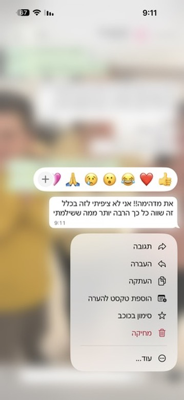
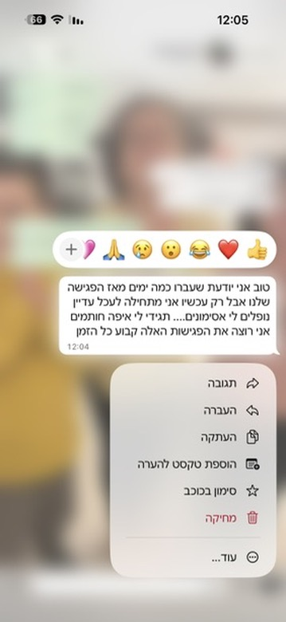
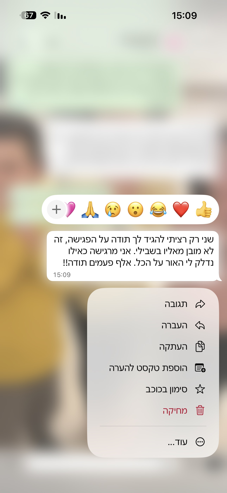
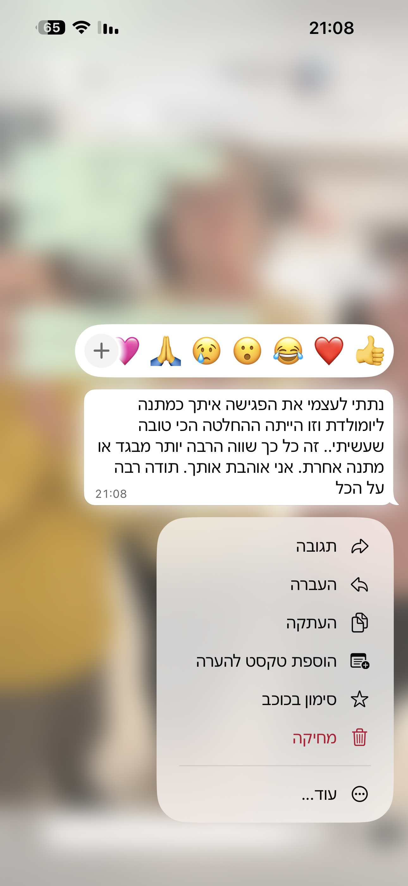
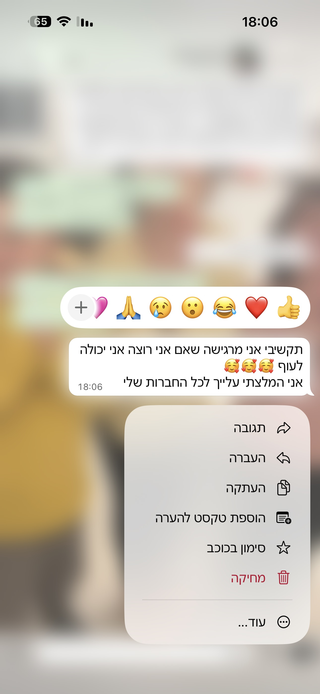

שלב ראשון
עושות סדר
נפרק יחד את כל מה שיושב לך על הלב, את מה שמכביד עלייך ביום־יום, ומה היית רוצה להרגיש במקום.
ומשם נתחיל לזהות את המצבים שחוזרים על עצמם שוב ושוב בחיים שלך.
מפגש אישי וממוקד · 60 דקות
לנשים שמרגישות שהן נותנות הכול לאחרים ובסוף מתאכזבות, שעושות דברים שהן לא באמת רוצות, ששומרות את הרגשות בבטן עד שהן מתפוצצות ומרגישות אשמה על כל דבר קטן. יצרתי מפגש מיוחד שיכול לעזור לך להבין מה הסיבה להכול ומה באמת צריך להשתנות כדי שתרגישי טוב יותר.
בלי שיפוטיות · בקצב שלך · עם בהירות להמשך
את לא עייפה במקרה
אולי את מרגישה שהיית מתה להגיד „לא” —
אבל שוב מוצאת את עצמך מסכימה ונכנסת לסיטואציות שלא באמת רצית להיות בהן.
אולי את דואגת שלכולם יהיה טוב,
ומשתדלת לא לבקש עזרה כדי לא להעמיס על אף אחד.
אולי כשמשהו מפריע לך,
את שומרת אותו בבטן…
עד שמגיע הרגע שבו כבר אי אפשר יותר — והכול מתפרץ.
אולי את מתנצלת גם כשלא באמת עשית משהו לא בסדר.
אולי את נותנת המון לאנשים שאת אוהבת,
ועדיין מוצאת את עצמך שוב ושוב מתאכזבת.
אולי את חושבת כל הזמן איך אחרים ירגישו,
אבל כמעט לא עוצרת לשאול:
איך אני מרגישה?
ואולי, בלי לשים לב,
את עסוקה כל הזמן בלדאוג לכולם —
בזמן שאת נשארת במקום האחרון.
פגישה אישית של 60 דקות שבסופה נבין במדויק מה באמת עומד מאחורי התחושות שמלוות אותך, ולמה את שוב ושוב מוצאת את עצמך באותם מצבים.
במהלך המפגש נצלול יחד למה שקורה מתחת לפני השטח, נחבר בין חוויות, רגשות ומצבים שחוזרים על עצמם, ונגלה מה באמת מנהל אותך מאחורי הקלעים.
פתאום דברים מתחילים להתחבר: למה את מגיבה כמו שאת מגיבה, למה את מוצאת את עצמך עושה דברים שלא באמת רצית, ולמה את מרגישה כמו שאת מרגישה גם כשאין לזה הסבר הגיוני.
מתחושת עומס לבהירות
שלב ראשון
נפרק יחד את כל מה שיושב לך על הלב, את מה שמכביד עלייך ביום־יום, ומה היית רוצה להרגיש במקום.
ומשם נתחיל לזהות את המצבים שחוזרים על עצמם שוב ושוב בחיים שלך.
שלב שני
נזהה את הבחירות והתגובות האוטומטיות שלך שמגיעות מהתת־מודע, ונבין למה את מגיבה כמו שאת מגיבה ואיך זה קשור למה שאת מרגישה מבפנים.
שלב שלישי
אחרי שנגיע לעומק הרגשות שלך, נדע איך לבנות בסיס לשינוי אמיתי ויציב.
עם מה תצאי מהמפגש?
פרטי המפגש
מילים שנשארות איתי





פורסם באישור המטופלות
הסיפור האישי שלי
כתוצאה מאירועי חיי הפכתי לאישה שמרצה ומתאימה את עצמה לסביבה. כל הזמן דאגתי לכולם, אמרתי את מה שהם רצו לשמוע ונתתי מעצמי את כל מה שהיה לי — וגם את מה שלא: אנרגיה, זמן, כסף, הכלה, אהבה ומה לא.
מצאתי את עצמי שוב ושוב בקשרים שלא התאימו לי, מקבלת החלטות שלא היו באמת שלי ומתרחקת יותר ויותר מעצמי.
הייתי עייפה, מבולבלת ובודדה. בקושי סיימתי תיכון מרוב עייפות. מבחוץ נראיתי ממש בסדר — החברה הכי טובה, זו שתמיד שם בשביל כולם. ובפנים הכול היה ריק. לא ידעתי מה אני רוצה ומה טוב לי. לא היו לי תחביבים או תחומי עניין, ושקלתי 120 ק״ג.
בקיצור — אין אותי.
בגיל 28 מצאתי את עצמי אחרי גירושים מורכבים, עם שלושה ילדים קטנים. חשבתי שזה הדבר הכי גרוע שקרה לי בחיים.
אחרי שהשתקמתי התחתנתי שוב. חשבתי שהצלחתי לקום מחדש — אבל מצאתי את עצמי שוב באותו המקום, גרושה בפעם השנייה.
איך לעזאזל זה קרה לי?
איך מצאתי את עצמי בגיל 31 גרושה בפעם השנייה?
דרך טיפול עמוק שעברתי בעקבות הגירושים, התחלתי לראות בפעם הראשונה מה באמת מנהל אותי, למה אני בוחרת כמו שאני בוחרת ואיך כל זה קשור למה שאני מרגישה.
וההבנה הזו שינתה לי את החיים.
לאט לאט בניתי את עצמי מחדש — לגמרי אחרת. אפשר לומר שכמעט לא נשאר זכר לאדם שהייתי לפני. השתניתי מקצה לקצה, והטיפול שלי הוביל אותי בסופו של דבר להפוך למטפלת בעצמי.
אחרי הדרך שעברתי וההכשרות המקצועיות שלי, אני כאן כדי לעזור לנשים שמרגישות שאיבדו את עצמן לעצור לרגע, להבין מה באמת קורה להן ולמצוא את הדרך חזרה לעצמן.
לא חייבים להגיע לשפל המדרגה כדי לעבור שינוי ולהרוויח מחדש את החיים שלך. אפשר לחיות כמו שאת רוצה, להיות מאושרת — והכי חשוב, להרגיש שמגיע לך.
לפני שמתחילות
כן. רוב הנשים שמגיעות למפת העומק לא יודעות להגדיר בדיוק מה קורה להן — הן רק מרגישות שמשהו לא עובד.
המפגש נועד בדיוק בשביל זה: לעזור לך להבין מה באמת עומד מאחורי התחושות שלך.
לא. זה מפגש עומק ממוקד שנועד לעשות סדר, לחבר את הנקודות ולהבין מה באמת קורה לך.
הרבה פעמים זו הפעם הראשונה שנשים רואות את התמונה המלאה של עצמן.
את לא צריכה לדעת להסביר. זה בדיוק המקום שבו אני עוזרת לך לשים מילים על מה שאת מרגישה ולראות דברים שאולי עד היום לא הצלחת לראות לבד.
כן. לפעמים תובנה אחת נכונה משנה את כל הדרך שבה את מסתכלת על עצמך.
המטרה של המפגש היא לא לפתור הכול, אלא לתת לך בהירות אמיתית וכיוון ברור.
זה לגמרי טבעי, והרבה נשים מרגישות ככה. הקצב הוא שלך, ואת משתפת רק במה שמרגיש לך נכון.
דווקא ההבנה היא שמביאה הקלה — לא להפך. המפגש הוא מרחב בטוח, בלי שיפוטיות ובלי לחץ.
בסיום המפגש תהיה לך הבנה ברורה יותר של עצמך וכיוון להמשך.
אם תרגישי שאת רוצה להמשיך לתהליך עמוק יותר, אסביר לך על האפשרויות — בלי שום התחייבות.
כן. הרבה נשים שמגיעות הן בדיוק כאלה — מתפקדות, חזקות ו„על זה”, אבל מבפנים מרגישות עייפות, עומס או חוסר שקט שלא עובר.
המפגש מתקיים אונליין או בבית דגן, באורך של כ־60 דקות, באווירה רגועה, אישית ובגובה העיניים.
הצעד הבא פשוט
שלחי לי הודעה ב־WhatsApp ואחזור אלייך לתיאום.
למי זה מתאים?
לנשים שחוות עומס רגשי, אשמה, שחיקה או תחושת תקיעות – ורוצות סוף סוף להבין למה.
הצעד הראשון מתחיל בבהירות